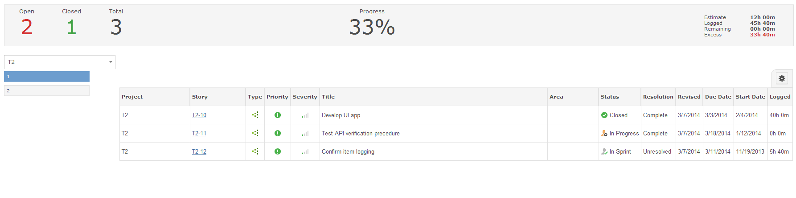
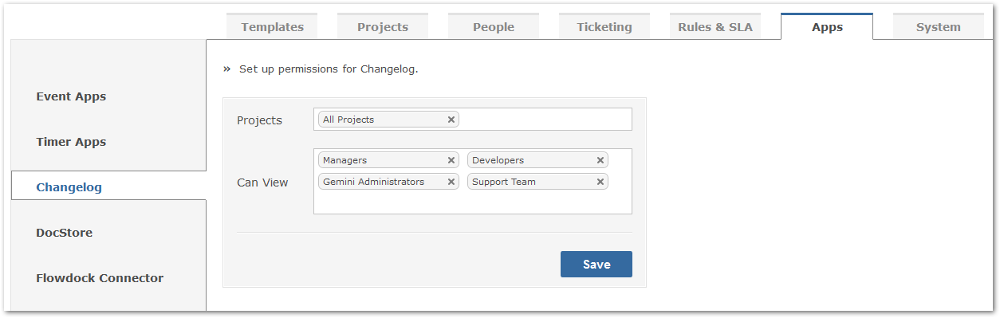

The Changelog helps you to view the history of changes and progress made. The Changelog helps you to understand your past development features made. The Changelog also provides a percentage of work that has been completed.

The selection of various Sprints/Versions helps you to drill down directly in all assets of your project.
To also ensure that projects or Sprints/Versions were being maintained and progressively worked on, the Changelog app displays time information to better gauge how much time was applied towards a project or Sprint/Version.
Note: in order for sprint to appear in the Changelog, it must be released, and not archived.With Gemini 6.1, configuring permissions for individual apps, and access to specific projects and user groups, has never been easier.
Simply navigate to the Apps section of your Gemini system, located at Customize > Apps. From here, select the Changelog app. You will then be able to configure the pertinent projects and user groups that require Changelog access.